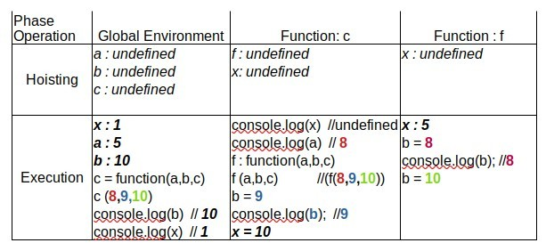

 x = 1; var a = 5; var b = 10; var c = function (a, b, c) { console.log("x in c function " + x); console.log("a in c function " + a); var f = function (a, b, c) { b = a; console.log("b in f function " + b); b = c; var x = 5; } f(a, b, c); console.log("b in c function " + b); var x = 10; } c(8, 9, 10); console.log("x in global " + x); console.log("b in global " + b);
// Global Scope var courseName = "Web Application Programming"; const getStudents = function () { let total = 0; // Local Scope total += 1; courseT = "WAP"; // Global Scope return total; };
// Scope A function XFunc () { // Scope B function YFunc () { // Scope C }; };
var x = 9; function myFunction() { return x * x; } console.log(myFunction()); x = 5; console.log(myFunction());
var foo = 1; function bar() { if (!foo) { var foo = 10; } alert(foo); } bar();